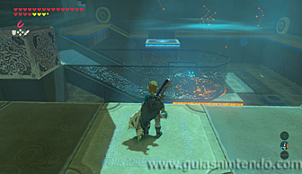
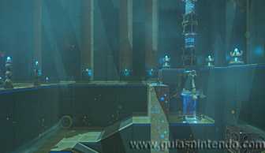

Puedes entrar en este santuario desde que llegas a la torre de Hebra. Está al norte, muy cerca de la Cabaña de Selmie (la campeona de deslizamiento con escudo).
Una vez dentro puedes coger el cofre que hay en lo alto usando el imán. Contiene un mandoble de hielo.
Después tienes que sacar un bloque oculto en el muro (también usando el imán). Está al lado de la rampa que lleva a la zona enrejada. A continuación, coloca sobre ese bloque el gran cubo de metal que hay en el otro extremo de la sala.
Ahora coge la esfera y sube la rampa cercana a la entrada. Desde ahí lanza la esfera hacia las corrientes de aire.

Las corrientes empujarán la esfera recorriendo toda la habitación hasta llegar a su destino. El único problema es que hay una plataforma móvil y debes calcular para que coincida su movimiento con el de la esfera. Es decir, tendrás que conseguir que la esfera pase por encima de la plataforma móvil para así llegar hasta el final de su camino. Si no es así caerá y tendrás que volver a repetir el lanzamiento.
Si lo logras que pase por encima, debes colocarte en las dos baldosas con un dibujo justo al lado de la
entrada y permanecer ahí hasta que la esfera entre en el agujero. Recuerda que para que la esfera
llegue a su destino tienes que haber colocado previamente el bloque de metal sobre el bloque que estaba
oculto en la pared.
Si lo has hecho correctamente te elevarás hasta el piso superior.

Desde allí arriba puedes llegar sin problemas al altar y podrás examinarlo para obtener un símbolo de valía.